Repair Procedures
Replacement
1. Loosen the wheel nuts slightly.
Raise the vehicle, and make sure it is securely supported.
2. Remove the front wheel and tire (A) from front hub.
Tightening torque:
88.2 - 107.8 N.m (9.0 - 11.0 kgf.m, 65.0 - 79.5 lb-ft)
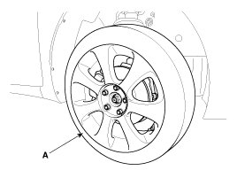
CAUTION:
Be careful not to damage to the hub bolts when removing the front wheel and tire (A).
3. Remove the brake caliper mounting bolts , and then hold the brake caliper assembly (A) with wire.
Tightening torque:
78.4 - 98.0 N.m (8.0 - 10.0 kgf.m, 57.8 - 72.3 lb-ft)
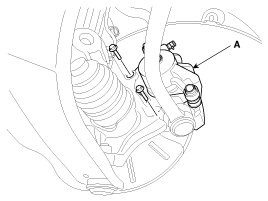
4. Loosen the bolt and then remove the wheel speed sensor (A).
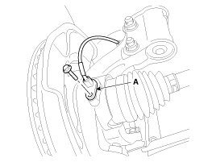
5. Loosen the screw and the remove the front disc (A).
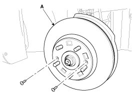
6. Loosen the driveshaft nut (A).
Tightening torque:
240.3 - 269.7 N.m (24.5 - 27.5 kgf.m, 177.2 - 198.9 lb-ft)
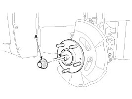
CAUTION:
- The driveshaft lock nut should be replaced with new ones.
- After installation driveshaft lock nut, stake the lock nut using a chisel and hammer as shown in the illustration below.
- After unfolding the lock nut of caulking slot, loosen the lock nut.
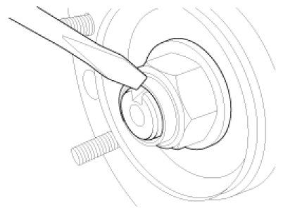
7. Remove the tie rod end ball joint (A) from the knuckle.
(1) Remove the split pin (B).
(2) Remove the castle nut (C).
Tightening torque:
23.5 - 33.3 N.m (2.4 - 3.4 kgf.m, 17.4 - 24.5 lb-ft)
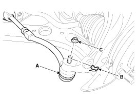
8. Remove the lower arm (A) from the knuckle.
Tightening torque:
78.4 - 88.2 N.m (8.0 - 9.0 kgf.m, 57.8 - 65.0 lb-ft)
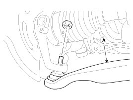
9. Disconnect the driveshaft (A) from the front hub assembly.
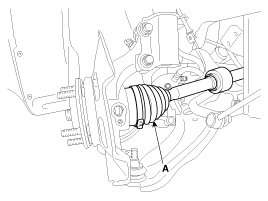
10. Loosen the strut mounting bolts and then remove the knuckle assembly (A).
Tightening torque:
137.3 - 156.9 N.m (14.0 - 16.0 kgf.m, 101.3 - 115.7 lb-ft)
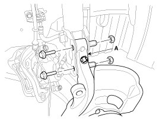
11. Install in the reverse order of removal.
12. Check the alignment.
Disassembly
1. Remove the snap ring (A).
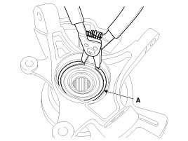
2. Remove the hub assembly from the knuckle assembly.
(1) Install the front knuckle assembly (A) on press.
(2) Lay a suitable adapter (B) upon the hub assembly shaft.
(3) Remove the hub assembly (C) from the knuckle assembly (A) by using press.
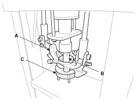
3. Remove the hub bearing inner race from the hub assembly.
(1) Install a suitable tool (A) for removing the hub bearing inner race on the hub assembly.
(2) Lay the hub assembly and tool (A) upon a suitable adapter (B).
(3) Lay a suitable adapter (C) upon the hub assembly shaft.
(4) Remove the hub bearing inner race (D) from the hub assembly by using press.
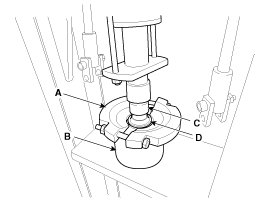
4. Remove the dust cover (A).
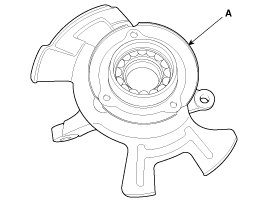
5. Remove the hub bearing outer race from the knuckle assembly.
(1) Lay the hub assembly (A) upon a suitable adapter (B).
(2) Lay a suitable adapter (C) upon the hub bearing outer race.
(3) Remove the hub bearing outer race from the knuckle assembly by using press.
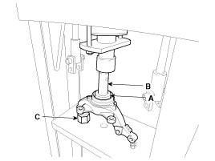
6. Replace hub bearing with a new one.
Reassembly
1. Install the hub bearing to the knuckle assembly.
(1) Lay the knuckle assembly (A) on press.
(2) Lay a new hub bearing upon the knuckle assembly (A).
(3) Lay a suitable adapter (B) upon the hub bearing.
(4) Install the hub bearing to the knuckle assembly by using press.
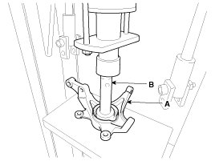
CAUTION:
- Do not press against the inner race of the hub bearing because that can cause damage to the bearing assembly.
- Always use a new wheel bearing assembly.
2. Install the dust cover (A).
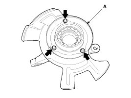
3. Install the hub assembly to the knuckle assembly.
(1) Lay the hub assembly (A) upon a suitable adapter (B).
(2) Lay the knuckle assembly (C) upon the hub assembly (A).
(3) Lay a suitable adapter (D) upon the hub bearing.
(4) Install the hub assembly (A) to the knuckle assembly (C) by using press.
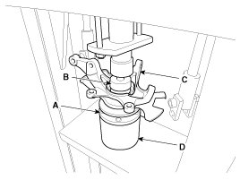
CAUTION:
Do not press against the inner race of the hub bearing because that can cause damage to the bearing assembly.
4. Install the snap ring (A).
Inspection
1. Check the hub for cracks and the splines for wear.
2. Check the brake disc for scoring and damage.
3. Check the knuckle for cracks.
4. Check the bearing for cracks or damage.